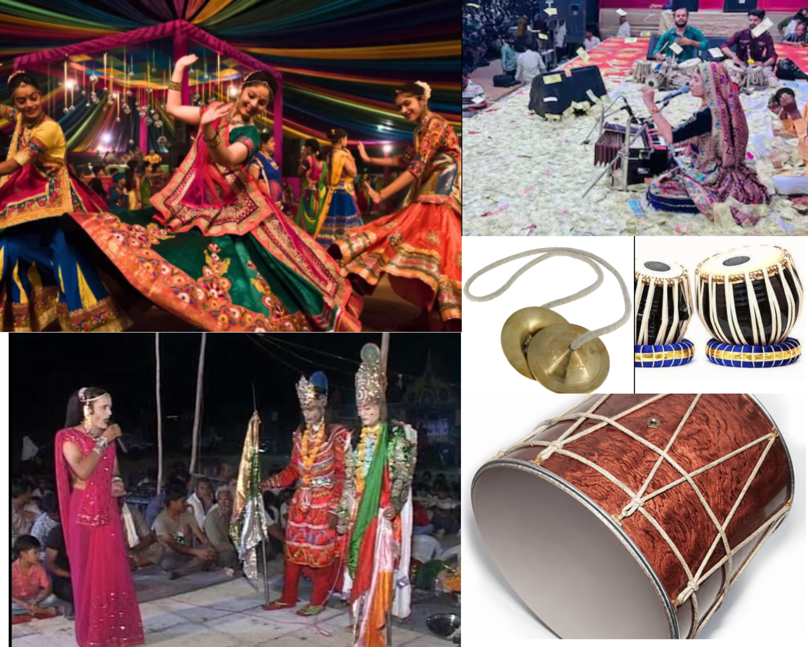

The clothing style in Kumbhan village beautifully blends tradition with modern trends. Elder women mostly wear sarees with regional designs and vibrant colors. Young girls often wear kurtas, dresses, pants, and T-shirts, while younger women also mix in ethnic outfits like Chaniya Choli for festivals. Men in the village traditionally wore Kediyu and Dhoti with turbans, but nowadays, young men commonly wear pants, shirts, and T-shirts in daily life. During festivals and weddings, traditional attire is still proudly worn by all age groups.
Introduction
The culture of Kumbhan village reflects its rich heritage. The lifestyle, cuisine, and traditional attire of the people preserve the historic colors of the Saurashtra region. Simplicity, warmth, and strong community ties are the cornerstones of village life.
Traditional Clothing (Poshak)

Local Food (Khorak)
Every household in Kumbhan village takes pride in preparing aromatic, home-cooked meals filled with traditional flavors. Daily meals often include Bajra roti, dal-rice, buttermilk, and Sev-Tameta. During special occasions and festivals, the menu becomes more festive and diverse—featuring dishes like Puri-Bhajiya, Gota, Shiro, Paratha, Thepla, and sweets like Dudhpak and Shrikhand.
- Undhiyu – A special mixed vegetable dish enjoyed during winter
- Sukhdi, Ladoo, and Jalebi – Popular sweets made during festivals
- Thepla, Khakhra, Fafda, Gathiya – Everyday snacks loved by all age groups

Folk Culture
Folk arts such as Garba, Bhavai, and Dayra are still vibrantly celebrated in Kumbhan. During community gatherings, elders passionately recount traditional tales and sing folk songs, preserving the village’s rich oral heritage.
- Musical Instruments: Dhol, Manjira, Nagara
- Traditional Dances: Garba, Bhavai
- Performances: Storytelling sessions, devotional songs

Local Language & Expressions
The people of Kumbhan speak Gujarati, flavored with a unique Saurashtrian dialect. Language here is more than communication—it's an expression of culture, humor, and wisdom. Villagers often use colorful proverbs and idioms in daily conversations, making even casual talk rich in meaning.
- Common Greetings: "Kem cho? Majama cho!" (How are you? I'm fine!)
- Wisdom in Words: Local idioms and sayings woven into speech

Beliefs & Values
The people of Kumbhan hold strong spiritual beliefs that shape their daily lives. Traditional rituals like lighting a diya, performing daily aarti, and revering nature and animals continue to be practiced. These customs reflect deep-rooted values of peace, respect, and faith, which guide interpersonal relationships and community life.
- Daily Rituals: Lighting diyas, offering prayers, performing aarti
- Spiritual Connection: Worship of nature, animals, and seasonal cycles
- Core Values: Respect for elders, harmony, and devotion